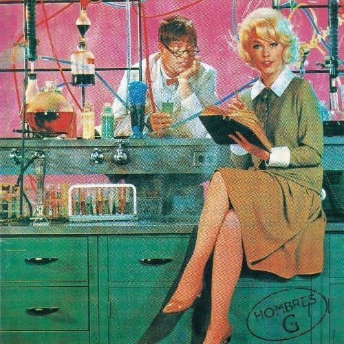
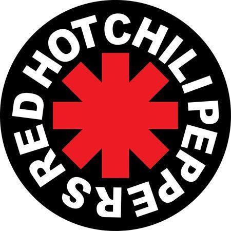
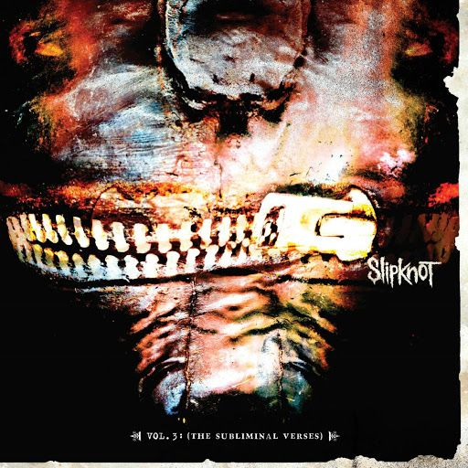

Rock Ingles/Español
El Rock para mi antes era musica aburrida, musica que no me agradaba para nada a mi antes me gustaba mucho de la musica que se escucha hoy en dia, musica que ahora considero, no fea, pero si musica que me ah dejado de gustar poco a poco, mi introduccion hacia el rock comenzo, con una cancion del Grupo Metallica, hubo una cancion de ellos la cual me gusto mucho y de ahi, fui descubriendo muchos mas grupos de rock en ingles, mi primera cancion de rock en español fue una cancion del cantante Juanes, con la cancion de "A dios le pido", despues de esa cancion ya tambien empezo mi gusto por ambos
Discos Favoritos
Estos son algunos de mis discos favoritos en donde se encuentran mis canciones favoritas
- Hombres G 
- PXNDX
- Red Hot Chilin Peppers 
- Slipknot 
- Psychosocial - Slipknot
- La tierra de nunca jamas - Mago de Oz
- Can't Stop - Red Hot Chili Peppers
- La Muralla Verde - Enanitos Verdes
- Visitia nuestro bar - Hombres G
- Elvis Presly
- variante de alto rendimiento del famoso "pony car" estadounidense, equipada tradicionalmente con motores V8 de gran cilindrada (actualmente 6.2L) y una estética deportiva distintiva.
- The Beatles
- icónico automóvil deportivo japonés, producido entre 1999 y 2002, reconocido por su alto rendimiento y tecnología, especialmente en su versión GT-R.
- Queen
- icónico automóvil deportivo de lujo, producido por el fabricante alemán Porsche AG desde 1964. Se caracteriza por su diseño atemporal tipo coupé fastback, configuración de motor trasero bóxer de seis cilindros y plazas 2+2, manteniendo su esencia original a lo largo de más de seis décadas de evolución.
- The Rolling Stone
- conocidos por su actitud rebelde y su inconfundible logo, sus canciones "(I Can't Get No) Satisfaction" y "Paint It Black" son clásicos del género.
- Metallica
- pioneros del metal, el trash y otros subgéneros más duros. Su álbum "Master of Puppets" (1986) es su trabajo más reconocido.
Hisotria del Rock
El rock comparte podio con el pop en ser el género musical más consumido en todo el mundo. Sus orígenes se remontan a 1950, si bien desde entonces el estilo ha vivido numerosos cambios y ha evolucionado hacia una categoría ecléctica que abarca casi toda la música actual. Solo se necesita de un elemento para rockear: la guitarra eléctrica.